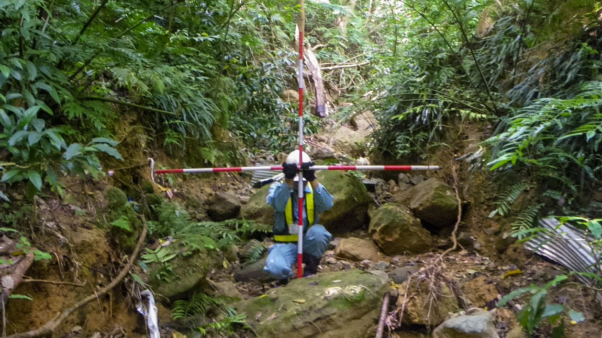

01
工事監督支援
発注者の監督職員を補助し、工事が計画どおり安全に進んでいるかを確認します。
- 工事状況の確認
- 施工計画書の確認
- 工程・品質・安全管理の確認
- 工事資料の確認
- 発注者への報告
01About us
道路・河川・橋梁などの社会インフラ整備を、PSS事業部と技術部の2つの立場から支えています。
PSS事業部は、国や自治体など発注者の立場で公共工事を技術的に支援する「発注者支援業務」を担当しています。技術部は、鹿児島県内を中心に調査・測量・土木設計を行い、事業の土台をつくります。それぞれの専門性を活かして、地域の社会基盤づくりに取り組んでいます。
PSS事業部
発注者の立場で支える
工事監督支援・積算技術・資料作成など、公共工事を技術面から支援します。
技術部
調査・測量・設計で支える
鹿児島県を中心に、道路や河川などの社会基盤づくりの土台を担います。
02What we do
発注者支援業務とは、国や地方自治体などの発注者に代わり、公共工事の監督や資料作成、積算などを技術的に支援する仕事です。
発注者側
発注者
国土交通省・県・市町村
工事を発注し、完成まで責任を持つ
発注者側
発注者支援
コバルト技建の技術者（PSS事業部）
発注者のチームの一員として、技術面を支える
受注者側
施工会社
施工管理技術者
工事を計画し、現場で形にする
01
発注者の監督職員を補助し、工事が計画どおり安全に進んでいるかを確認します。
02
設計図書をもとに数量を拾い、工事費の算出や積算資料づくりを支援します。
03
事業を進めるうえで必要な行政資料や、設計変更・協議のための資料をまとめます。
03Difference
同じ工事に関わりながら、立っている場所が違います。施工管理が「つくる側」なら、発注者支援は「確かめる側」です。
施工管理
つくる側
施工会社の立場で、工事を実行し現場を管理する
発注者支援
確かめる側
発注者の立場で、工事を監督・確認し資料にまとめる
| 項目 | 発注者支援 | 施工管理 |
|---|---|---|
| 立場 | 発注者側 | 施工会社側 |
| 主な役割 | 工事の監督・確認・資料作成 | 工事の実行・現場管理 |
| 工程 | 工程を確認する | 工程を計画・管理する |
| 品質 | 品質基準を満たしているか確認 | 品質を確保する |
| 勤務環境 | 官公庁・事務所・現場 | 工事現場中心 |
施工計画書を書いたことがある人は、読むべきポイントが分かります。現場の段取りを知っている人は、無理のない工程かどうかを判断できます。発注者支援業務は、施工管理で培った知識と感覚を、立場を変えて活かせる仕事です。
04Engineering

鹿児島の未来を、
技術で支える
私たちの技術部は、鹿児島県を中心に、地域の社会インフラ整備を支える測量・設計業務に取り組む建設コンサルタントです。道路や河川など、地域の暮らしに欠かせない社会基盤の整備に、地域に根ざした技術者集団として携わり、安全で安心して暮らせる地域づくりに貢献しています。
調査・計画ルート選定
路線測量現地計測
詳細設計図面・数量作成
用地測量境界確定
05Our work
当社には、発注者支援を担う「PSS事業部」と、調査・測量・設計を担う「技術部」があります。それぞれの仕事と1日の流れをご紹介します。
発注者支援
国土交通省の事務所や県の出先機関などに勤務し、発注者の一員として工事の円滑な実施と品質確保を支えます。
出勤・メール確認
事務所に出勤。施工業者からの提出書類や連絡事項を確認します。
発注者との打ち合わせ
監督職員と、今日確認する工事や段階確認の予定をすり合わせます。
現場確認
工事現場へ。出来形や安全対策が計画どおりかを確認し、写真に残します。
昼休憩
工事資料・施工状況確認
施工計画書や品質管理資料を、設計図書と照らし合わせて確認します。
施工業者との協議
現場条件の変化や設計変更について、施工業者と内容を整理します。
報告書・資料作成
確認結果を報告書にまとめ、発注者へ提出します。
退勤
調査・測量・設計
鹿児島県の業務を中心に、道路や河川などの調査・測量・設計を行います。現地で調べたデータを、図面と数量で形にする仕事です。
出勤・朝礼
チームで今日の作業内容と担当を確認します。
測量準備・機器点検
測量機器や基準点の資料をそろえ、現地へ向かいます。
現地測量
道路や河川の現況を測り、設計の基礎になるデータを取得します。
昼休憩
測量データの整理
事務所に戻り、取得したデータをCADで図面化します。
設計計算・図面作成
構造計算や数量計算を行い、設計図面を仕上げていきます。
照査・打ち合わせ準備
先輩と成果品をチェックし、県の担当者との打ち合わせ資料を準備します。
退勤
06Projects
暮らしに欠かせない道路や川、構造物。PSS事業部は発注者の立場から工事を支え、技術部は調査・測量・設計で事業の土台をつくります。
地域をつなぐ道路の整備に関わります。拡幅や線形の改良、舗装の更新、トンネルや橋梁の新設など、工事の規模もさまざまです。
発注者支援としての関わり
大雨や土砂災害から暮らしを守る工事です。川幅を広げる改修や砂防えん堤の整備、被災した箇所を早く元に戻す災害復旧にも携わります。
発注者支援としての関わり
老朽化が進むインフラを、長く安全に使い続けるための仕事です。橋梁などの点検結果をもとに、補修や維持管理の計画を支えます。
発注者支援としての関わり
鹿児島県の業務を中心に、交通量や地形など現地の状況を調べます。計画・設計の前提となる、正確な現況把握が仕事の基礎になります。
主な業務
鹿児島県の業務を中心に、道路や河川などの計画・設計に必要な現地の状況を測ります。正確なデータが、その後の設計と工事のすべての基準になります。
主な業務
測量データをもとに、道路や河川構造物などを設計します。経済性や安全性、周辺環境への配慮を考えながら、図面と数量にまとめます。
主な業務
With the community
私たちの仕事は、皆さまからお預かりした税金で成り立つ公共事業です。だからこそ、仕事以外でも地域に貢献することを大切にしています。鹿児島や熊本では、道路の清掃などを行う「道守（みちもり）活動」に社員が参加しています。
参加している団体
07Environment
官公庁の勤務時間に合わせて働くため、予定が立てやすく、休みも取りやすい環境です。 ※ 2026年4月時点
08Career
現場経験のある技術者が多く在籍しています。資格取得を会社が後押しし、技術者としての次の段階をめざせます。 ※ 2026年4月時点
業務前研修
業務の流れや確認の基準を、研修で身につけます。
支援技術者
先輩と同じ事務所で、確認業務や資料作成を担当します。
担当技術者
担当工事を受け持ち、確認から報告まで進めます。
主任技術者
担当業務の中心となり、後輩の指導も行います。
管理技術者
業務全体を管理し、発注者との窓口を担います。
※ 年数は目安です。経験や保有資格により異なります。
絆を大切にし、
感謝の気持ちを持って
社会に貢献する。
一人ひとりの成長を支えるため、部署ごとの研修を継続的に行っています。自己啓発やスキルアップに取り組める環境を整え、社内のコミュニケーションやチームづくりを通じて、社員同士のつながりも大切にしています。
09FAQ
はい、応募できます。入社後は先輩社員と同じ事務所に配属し、資料作成や書類の確認から段階的に仕事を覚えていただきます。異業種から入社して活躍している社員もいます。
大いに活かせます。施工計画書や工程・品質・安全管理の知識は、そのまま確認業務の基準になります。現場の事情が分かるため、施工業者との協議もスムーズに進められます。
重機の操作や作業員としての作業はありません。工事の立会いや施工状況の確認で現場に出ることはあります。技術部では、調査や測量のために現地で作業を行います。
原則として、ご自宅から通える範囲の事務所に配属します。業務の契約期間（多くは1年単位）の区切りで、配属先の事務所が変わる場合があります。
鹿児島・宮崎・長崎の国道事務所・河川事務所などから、面接でご希望を伺って相談します。
応募できます。入社後に土木施工管理技士などの資格取得をめざす社員を、受験費用の補助などで支援しています。
平均で月10時間程度です。官公庁の勤務時間に合わせて働くため、施工管理と比べて予定が立てやすい仕事です。年度末など、時期によって忙しくなることもあります。
あります。受験費用や講習費用の補助に加え、合格後は資格手当を支給します。社内には1級土木施工管理技士が71名在籍しており、先輩から受験のアドバイスを受けることもできます。
10Requirements
PSS事業部・技術部それぞれの募集要項を、タブで切り替えてご確認いただけます。
職種：土木技術者／発注者支援業務（正社員） 3つの区分で募集しています
A
2027年3月に卒業予定の方（大学・高専・専門学校・高校）
B
発注者支援業務や土木の実務経験がない方、異業種から転職したい方
施工管理経験者を歓迎
C
土木工事の管理や、土木の実務経験がある方
| 雇用形態 | 正社員 |
|---|---|
| 仕事内容 | 工事監督支援、事業調査、積算技術、資料作成業務など |
| 勤務地 | 会社が定める国道事務所・河川事務所、または出張所 （鹿児島・宮崎・長崎で相談できます） |
| 勤務時間 | 8:30〜17:30 |
| 休日・休暇 | 完全週休2日制（土日祝休み）、年末年始、特別休暇、有給休暇（入社6か月後に10日付与） |
| 年間休日 | 123日 |
| 昇給 | あり |
| 試用期間 | 6か月（期間中の条件変更なし） |
| 福利厚生 |
|
| 受動喫煙対策 | 屋内禁煙 |
職種：測量・設計技術（正社員）
A
測量・設計の仕事に鹿児島県内で挑戦したい、卒業予定の方
測量・設計の実務経験者を歓迎
B
測量士または測量士補の資格をお持ちの方
| 雇用形態 | 正社員 |
|---|---|
| 仕事内容 | 公共事業（主にインフラ事業）における測量及び土木設計業務の担当者またはその補助者 |
| 勤務地 | 鹿児島県志布志市有明町原田2300-2 |
| 勤務時間 | 8:30〜17:30（休憩60分、月平均残業時間7時間程度） |
| 休日・休暇 | 完全週休2日制（土日祝休み）、年末年始、特別休暇、有給休暇（入社6か月後に10日付与） |
| 年間休日 | 124日 |
| 昇給 | あり |
| 試用期間 | 6か月（期間中の条件変更なし） |
| 福利厚生 |
|
| 受動喫煙対策 | 屋内禁煙（屋外に喫煙スペースあり） |
※ 「中途採用（経験者）」の内容は、ハローワーク求人（求人番号 46010-28316061）に基づいています。求人票に掲載年の記載がなく、最新の情報かどうかを確認できていません。「新卒採用」の応募資格・給与・入社後の情報は未確認のため「要確認」としています。公開前に人事担当者による最終確認をお願いします。
11Selection flow
エントリーから内定まで、およそ3〜4週間が目安です。
エントリー
リクルートエージェント・ハローワーク・Indeedからご応募ください
書類選考
履歴書・職務経歴書をもとに選考します
一次面接
仕事内容のご説明と、これまでの経験をお聞きします
最終面接
役員と面接します。勤務地のご希望も伺います
内定
入社日はご相談のうえ決定します
12Entry
ご都合のよい方法でご応募ください。お電話でのご質問も受け付けています。